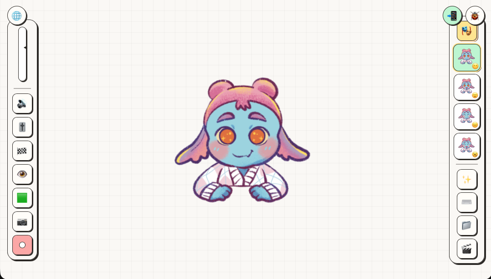
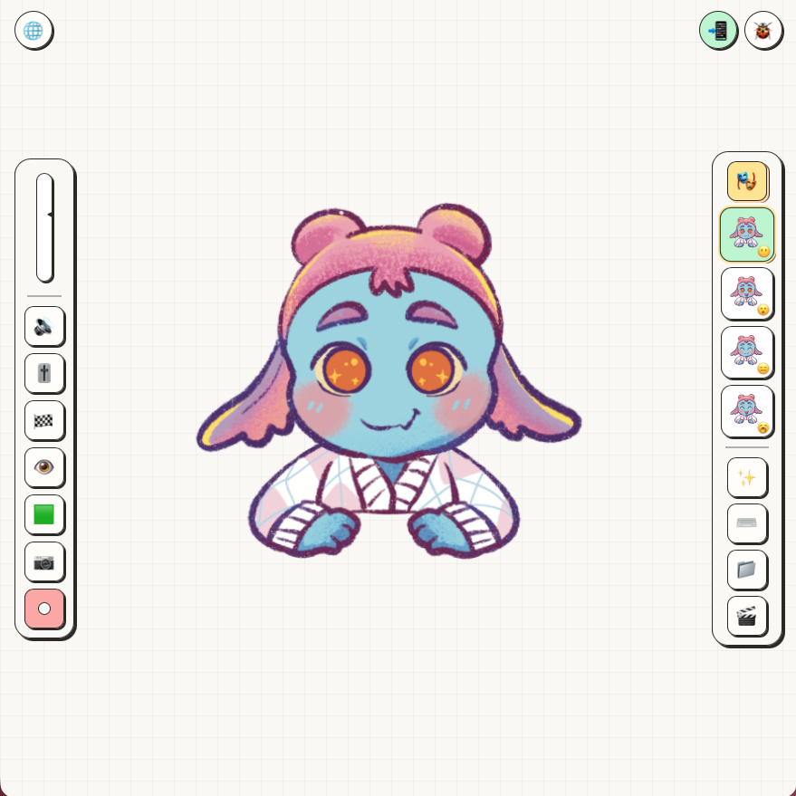

Avatar gambarmu, hidup saat kamu bicara.
Ingin tampil di live atau bikin konten tanpa menunjukkan wajah, tapi malas berurusan dengan software animasi yang ribet? SmoothieTuber mengubah gambarmu jadi avatar 2D yang bergerak smooth mengikuti suara, langsung dari browser.

PNGTuber 2D yang jalan langsung di browser.
SmoothieTuber adalah web app untuk membuat avatar 2D yang bereaksi pada suara. Cukup bawa gambarmu sendiri, atur mikrofon di browser, dan avatarmu langsung bergerak alami tanpa install aplikasi apapun.
Semua yang kamu perlu, tanpa menu yang ribet.
Reaktif Suara
Mulut avatar membuka dan menutup mengikuti volume mikrofonmu. Dilengkapi pengaturan sensitivitas & ambang batas.
Banyak Emosi
Buat ekspresi sebanyak yang kamu mau: Senang, Kaget, dsb. Ganti seketika via tombol pintas (hotkeys) dengan mata berkedip alami.
Ekspor Video
Rekam ke MP4, MOV, atau WebM transparan. Pilihan rasio 9:16, 1:1, atau 16:9 siap unggah langsung ke media sosial.
Tampil rapi di HP, monitor, dan feed.

HP, 9:16
TikTok, Instagram Reels, dan YouTube Shorts.
Monitor, 16:9
YouTube Video & OBS Studio Livestreaming.

Feed, 1:1
Postingan persegi feed Instagram & LinkedIn.
Empat langkah, langsung jadi.
Masukkan Kode
Setelah pembayaran, masukkan kode aksesmu di aplikasi.
Unggah Avatar
Unggah gambar mulut terbuka, tertutup, dan berkedip.
Kalibrasi Suara
Nyalakan mikrofon dan sesuaikan sensitivitas respon suara.
Siaran / Rekam
Tampilkan di livestream OBS atau rekam video instan.
Halo, saya Anin (Ukiran Anin)!
Saya suka bikin konten bercerita, tapi alergi banget tampil di depan kamera. Dulu saya capek sama aplikasi avatar yang berat, sering gagal instal, dan bikin laptop panas kayak kompor.
SmoothieTuber lahir dari keresahan saya sendiri: pengen punya karakter yang geraknya lembut, estetik, dan hidup ngikutin suara. Cukup buka browser di PC atau HP, tanpa instal apa pun.
Awalnya cuma buat saya pakai sendiri. Sekarang saya bagi buat kamu, sesama ilustrator dan kreator yang pengen karyanya lebih bernyawa.
(Sentuh / Hover untuk bicara 🎙️)
Lihat Aksinya Langsung di TikTok @ukiran_anin
Avatar 2D bergerak dan bereaksi langsung mengikuti suara rekaman. Klik salah satu video di bawah untuk menonton video aslinya di TikTok!


Yuk, cobain SmoothieTuber dan hidupkan avatarmu.
Buka di browser, unggah avatarmu, lalu tampil di livestream atau rekam videonya. Tanpa instal, langsung bisa dicoba.